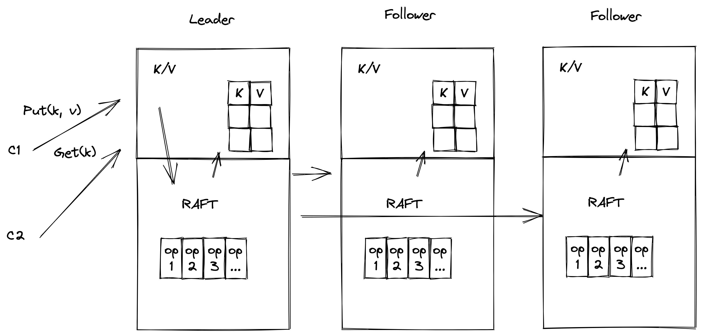
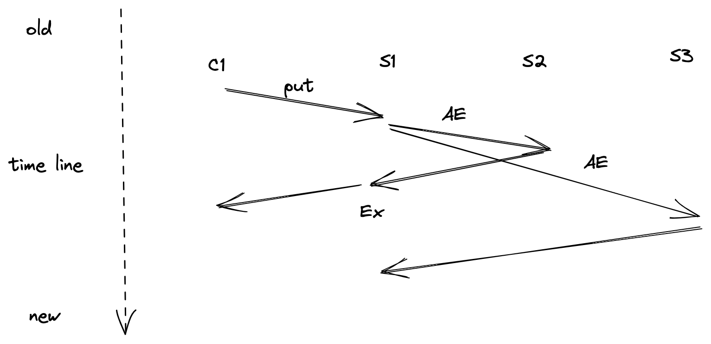
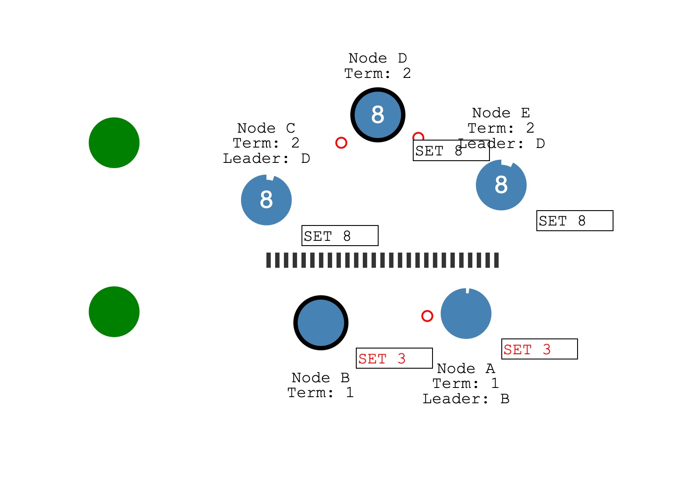
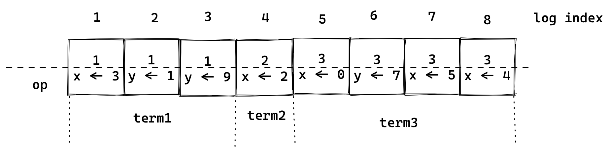
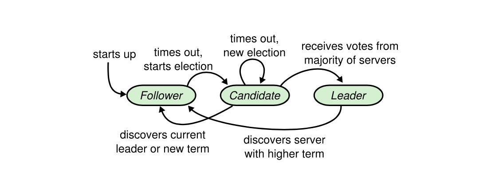
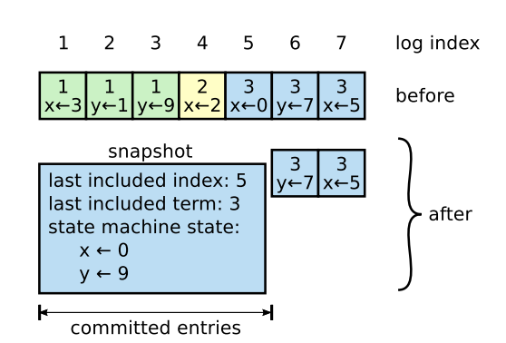

精解计算机系统课程
MIT 分布式系统（三）Raft 论文解读 #
本章我们解读 Raft 论文的核心内容，并对照 raft_cpp 项目中的 C++ 代码定义，帮助大家在概念和代码之间建立映射。代码中的类型定义位于 raft_cpp/include/raft/types.h 和 raft_cpp/include/raft/raft.h。
Raft 概览
我们不深入算法细节，而是先概览 Raft 在一个实际应用系统中的角色。

上图是一个使用 Raft 算法实现的分布式 KV 系统。设计目标是保证集群中所有节点状态一致——每个节点的 KV 表数据最终是一致的。
先不考虑故障场景，看看系统正常运行时的流程。以 Put 操作为例：客户端将 Put 请求发送给 Leader 节点对应的应用层，应用层将操作包装后提交给 Raft 层。Raft 为这个 Put 请求生成一条日志条目存储到自己的日志序列中，同时将这条操作日志复制给集群中的 Follower 节点。当半数以上节点都复制了这个日志并返回响应后，Leader 提交这条日志并应用到状态机（写入 KV 表），然后响应客户端。Leader 会在下一次复制请求中把 commit 信息带给 Follower，Follower 也应用这条日志。最终集群中所有节点的状态一致，整个系统运行的时序如下图所示。

乍一看很简单，但深入算法细节时会遇到许多问题：日志复制时有很多约束条件来保证一致性；故障时如何正确选出下一个 Leader；多次故障后日志状态一致性如何安全保证。这些正是后续章节结合代码分析的重点。
分布式系统中的脑裂
在介绍 Raft 算法之前，先看分布式系统的脑裂问题。脑裂字面上是"大脑裂开"的意思——大脑是人体的控制中心，裂开了整个系统就会出现紊乱。
对应到分布式系统中，一般是集群中的节点由于网络故障或其他故障被划分成不同的分区，不同分区由于无法通信会出现状态不一致。如果系统没有处理这种情况，网络恢复后也无法保证正确性。

上图展示了网络分区的情形。系统有 A-E 五个节点，由于故障，A、B 节点和 C、D、E 节点被划分到各自的网络分区中。绿色圆形代表两个客户端，如果它们向不同分区的节点写入数据，系统能保证分区恢复后状态一致吗？Raft 算法解决了这个问题。
多数派协议
Raft 论文中提到的半数票决（Majority Vote），也叫多数派协议，是解决脑裂问题的关键。假设分布式系统中有 2*f + 1 个服务器，系统做决策时需要半数以上节点投票同意，即必须 f + 1 个服务器都活着。这样系统最多可以接受 f 个服务器故障。
Raft 正是应用了半数票决来解决脑裂。奇数个节点（3、5...2n+1）组成的系统一旦出现网络分区，必然有一个分区存在半数以上节点，多数派票决就能正常运行，系统不会因此不可用。
Raft 的日志结构
请求经过系统最开始就要写入 Raft 日志了。在 raft_cpp 的 types.h 中，日志条目 Entry 的定义如下：
struct Entry {
int index = 0; // 日志索引号
int term = 0; // 任期号
std::vector<uint8_t> command; // 操作的序列化数据
};
每条日志有独立的编号 index，任期号 term 表示这条日志产生时的选举状态，command 是对状态机的操作（如 "set x = 3"）。Raft 节点的日志序列就是一组 Entry 的有序集合，在代码中用 std::vector<Entry> logs_ 表示。

Raft 的状态转换
Raft 协议采用 Leader 和多个 Follower 的模式。每个节点维护一个状态机，有三种状态：Leader、Follower 和 Candidate。在 types.h 中用枚举类定义：
enum class NodeState : uint8_t {
Follower = 0,
Candidate = 1,
Leader = 2
};

节点一启动就进入 Follower 状态，当选举超时时间到达后转为 Candidate 发起选举。获得半数以上选票后，Candidate 转变为 Leader。Candidate 发现更高任期的消息会变为 Follower，Leader 发现更高任期的消息也会变为 Follower。系统正常运行时一直在这三种状态之间转换。
对照论文 Figure 2，raft.h 中 Raft 类的成员可以清晰地分为三组：持久状态（currentTerm_、votedFor_、logs_）、所有节点的易失状态（commitIndex_、lastApplied_）和 Leader 独有的易失状态（nextIndex_、matchIndex_）。
Leader 选举
Raft 中有两个超时时间控制选举流程：选举超时（election timeout）和心跳超时（heartbeat timeout）。Follower 在选举超时内没收到 Leader 心跳就转为 Candidate 开始选举。选举超时设为随机值以避免多节点同时竞选。在 raft_cpp 的 util.h 中，选举超时为 1000~2000ms 的随机值，心跳超时固定为 125ms。
选举流程如下：集群初始化时所有节点都是 Follower；经过一段时间后（选举超时到达）某个节点率先转为 Candidate，增加自己的任期号，给自己投一票，然后并行向其他节点发送 RequestVote RPC：
// types.h 中的 RequestVote 请求/响应
struct RequestVoteRequest {
int term; // 候选人的任期号
int candidate_id; // 候选人 id
int last_log_index; // 候选人最后一条日志的索引
int last_log_term; // 候选人最后一条日志的任期
};
struct RequestVoteResponse {
int term; // 投票节点的当前任期
bool vote_granted; // 是否同意投票
};
Candidate 赢得半数以上选票后成为 Leader，之后向其他节点散播心跳。如果 Candidate 在等待投票时收到更高任期的心跳，它会变为 Follower；如果多个节点同时成为 Candidate 导致选票分裂（没有任何候选人获得多数选票），每个 Candidate 会重新设置随机超时时间继续选举，大概率下一轮会有一个节点获得多数选票。
🎬 Raft Leader 选举过程演示
日志复制
假设集群有 A、B、C 三个节点，A 为 Leader，客户端发送一个操作到集群：
1. 节点 A 收到客户端请求，将操作记录到本地日志中。
2. A 向其他节点发送 AppendEntries 消息，消息中包含尚未同步的日志条目。
3. B、C 收到 AppendEntries 后将日志追加到本地，返回成功响应。
4. A 收到半数以上成功响应后，更新 commit 号。
5. A 向客户端返回响应，并在下一次 AppendEntries 时把 commit 号通知 Follower。
6. Follower 收到 commit 号后也更新自己的 commit 号，应用日志到状态机。
AppendEntries 的消息结构在 types.h 中定义：
struct AppendEntriesRequest {
int term; // Leader 的任期号
int leader_id; // Leader 的 id
int prev_log_index; // 前一条日志的索引（一致性检查）
int prev_log_term; // 前一条日志的任期
int leader_commit; // Leader 的 commit 号
std::vector<Entry> entries; // 要同步的日志条目
};
struct AppendEntriesResponse {
int term; // 响应节点的当前任期
bool success; // 是否追加成功
int conflict_index; // 冲突索引（快速回退优化）
int conflict_term; // 冲突任期
};
正常情况下上述流程很顺利。如果 Follower 宕机或运行很慢或消息丢失，Leader 会记录到每个 Follower 的复制进度（nextIndex_ 和 matchIndex_），追加失败就不停重试，直到所有 Follower 都存储了所有日志条目。响应中的 conflict_index 和 conflict_term 用于快速回退优化，让 Leader 能一次性跳到冲突位置而非逐条回退。
🎬 Raft 日志复制过程演示
日志合并和快照发送
Raft 论文第 7 章介绍了日志压缩。按前面的复制逻辑，只要客户端有新操作就会写日志，日志量随操作增多一直增长。如果日志量不断增长，访问日志的耗时会增加，落后节点追赶也会非常消耗 IO 资源。
解决方案是快照（Snapshot）：每次日志提交后应用到状态机，我们只关心最终状态。可以定期将已提交日志产生的状态机状态记录下来，然后安全删除这些日志条目。代码中，快照的 RPC 消息定义如下：
struct InstallSnapshotRequest {
int term; // Leader 的任期号
int leader_id; // Leader 的 id
int last_included_index; // 快照最后一条日志的索引
int last_included_term; // 快照最后一条日志的任期
std::vector<uint8_t> data; // 状态机序列化数据
};
struct InstallSnapshotResponse {
int term; // 响应节点的当前任期
};

如上图，1~4 号日志的操作结果（x=0, y=9）被记录为快照后，这些日志可以被安全删除。当某个节点挂了重新加入集群且日志完全无法找回时，Leader 会通过 InstallSnapshot RPC 发送快照数据，对端安装快照后继续同步增量日志，快速恢复状态。代码中 raft.h 的 Snapshot() 和 CondInstallSnapshot() 方法分别负责 Leader 端打快照和 Follower 端安装快照，我们将在下一章详细分析实现。
🎬 Raft 日志快照与压缩演示
捐赠
整理这本书耗费了我们大量的时间和精力。如果你觉得有帮助，一瓶矿泉水的价格支持我们继续输出优质的分布式存储知识体系，2.99¥，感谢大家的支持。
遵循MIT协议开源。
感谢 「赫蹏」 提供如此优秀的中文排版系统